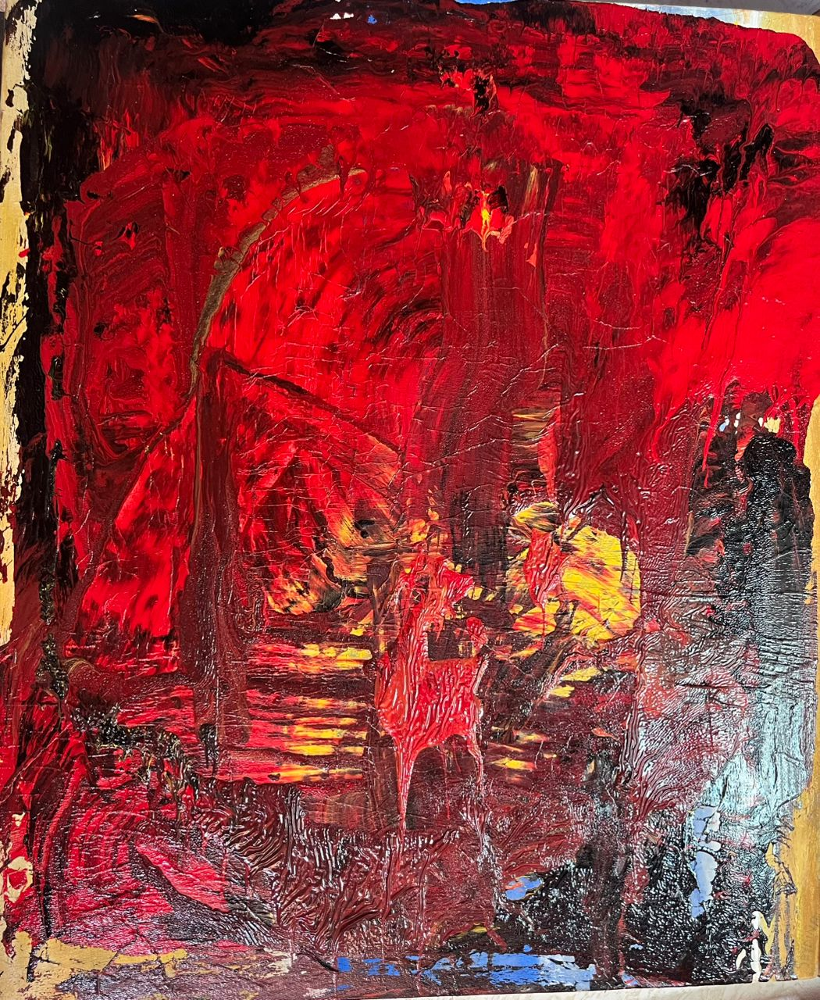
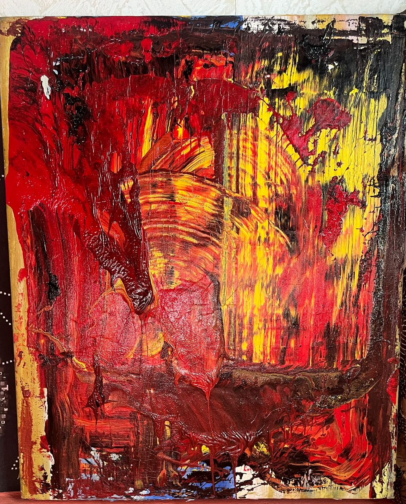
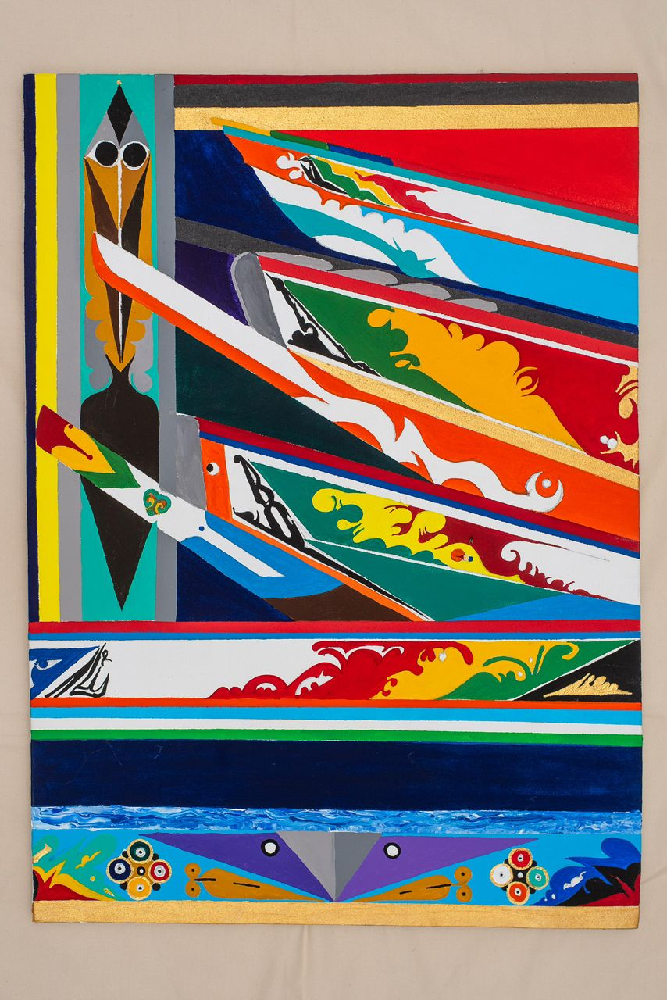
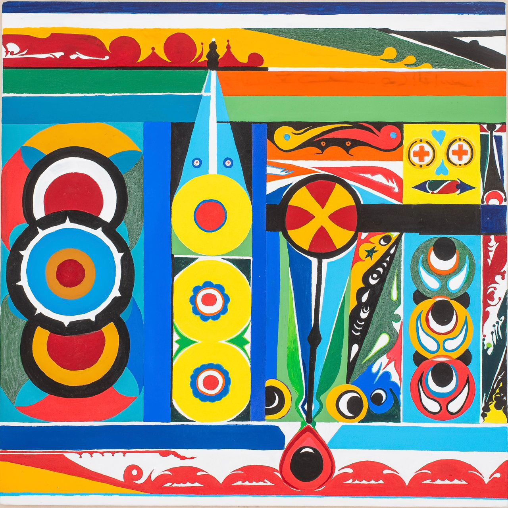
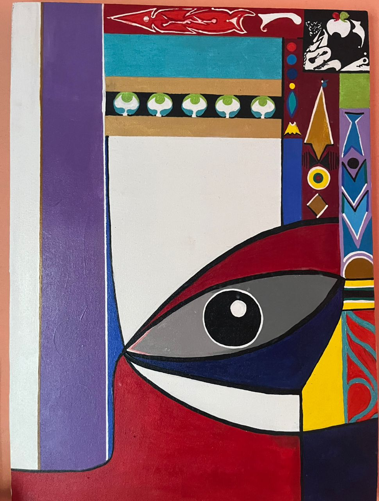
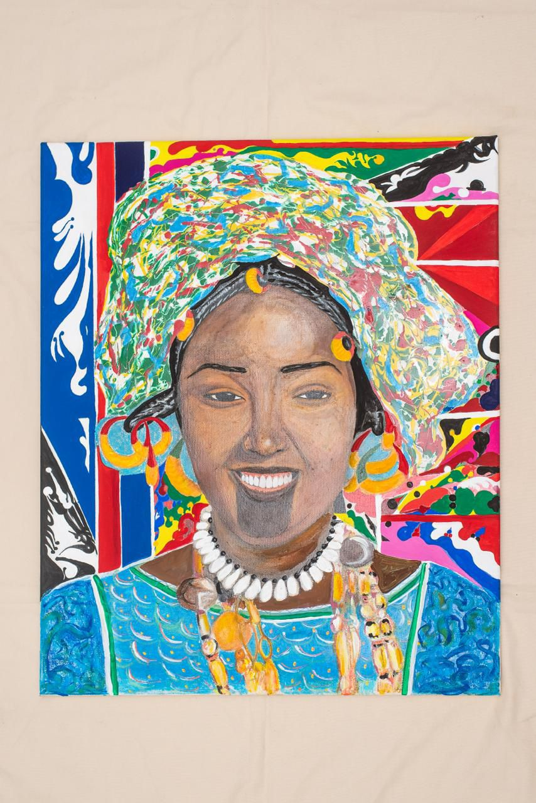
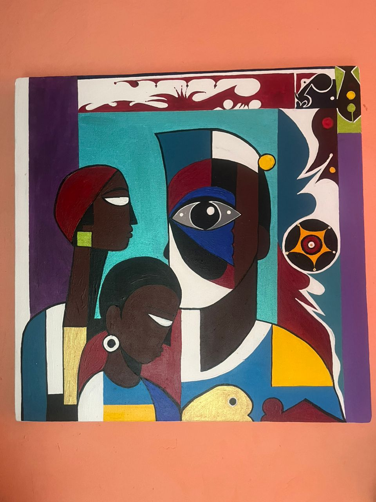

Catalogue
Les œuvres
Chaque toile est une pièce unique, signée. Dimensions et disponibilité communiquées sur demande.

Braise I

Braise II

Pirogues à quai

Pavois

L'Œil

Signare

Les Trois
Une toile vous intéresse ?
La galerie vous répond par téléphone ou WhatsApp.